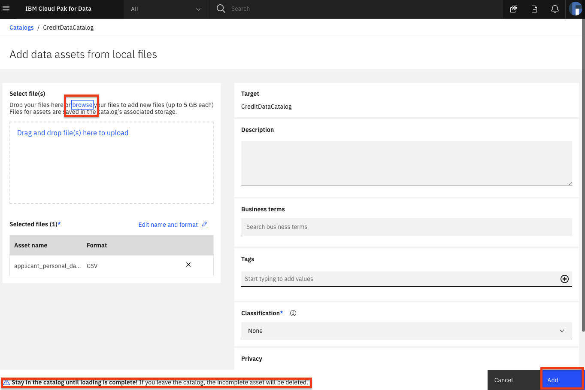
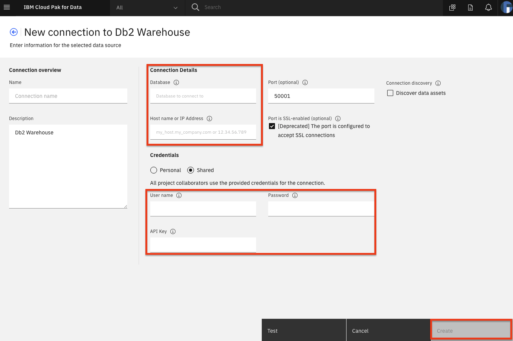
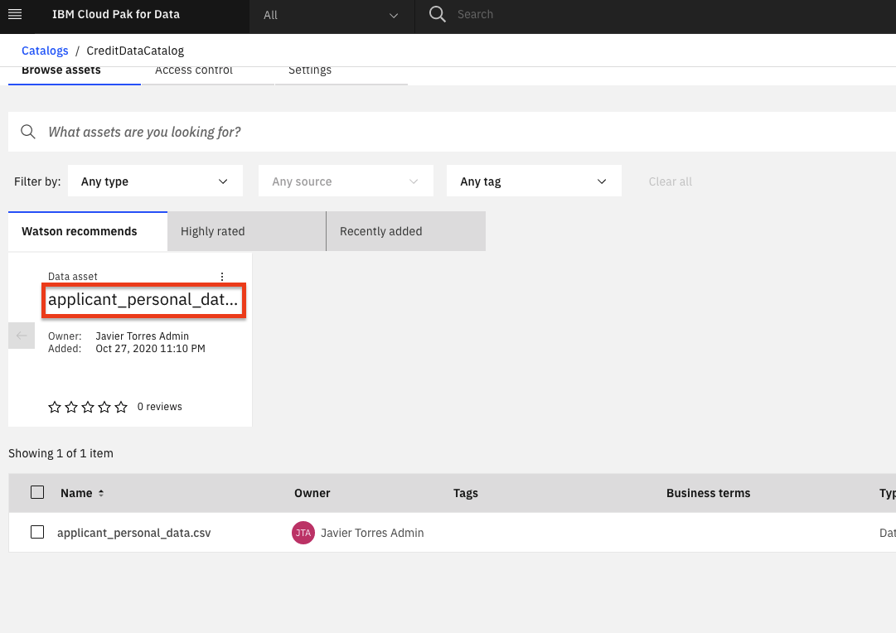
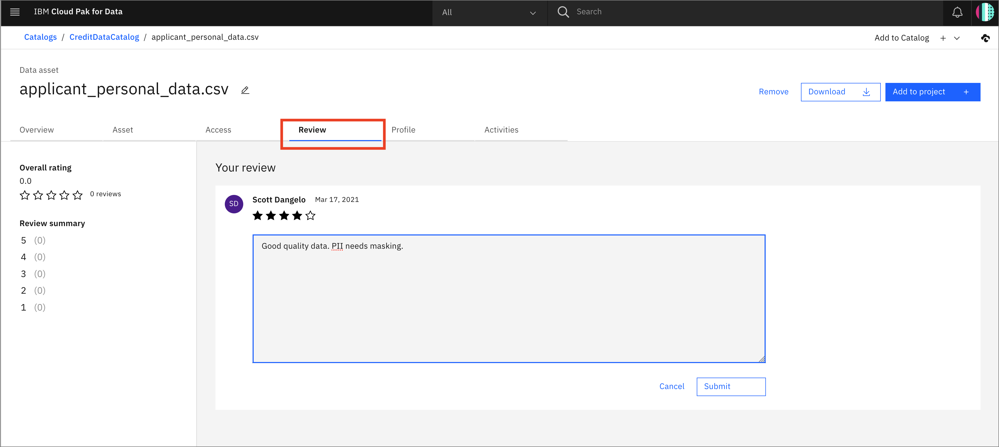
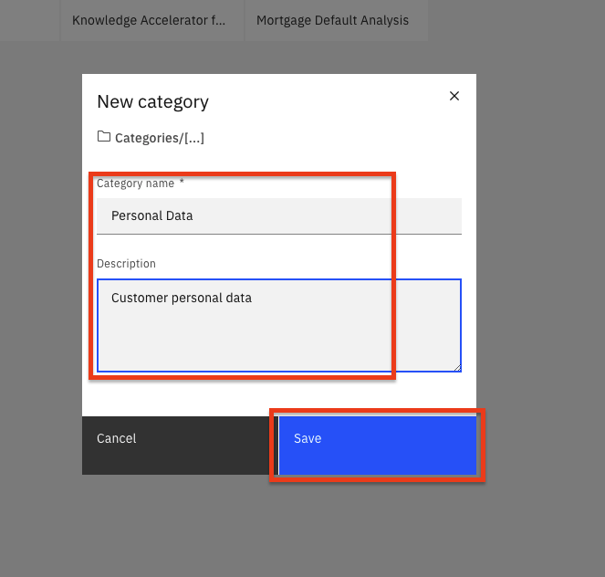
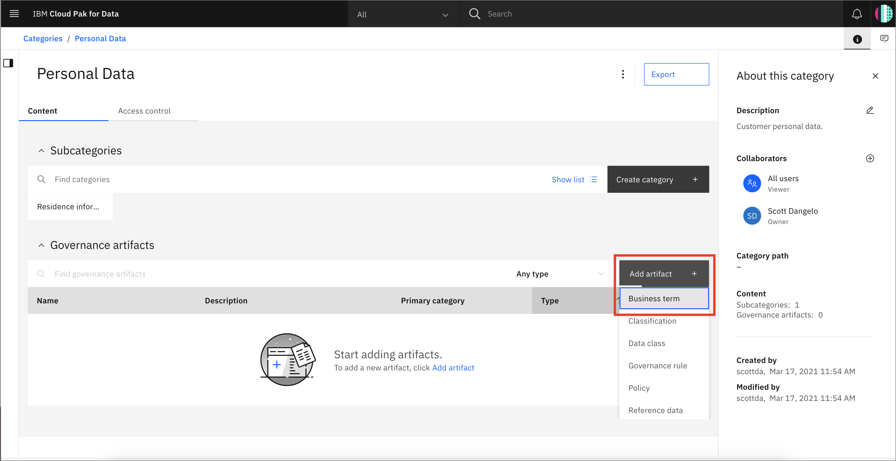
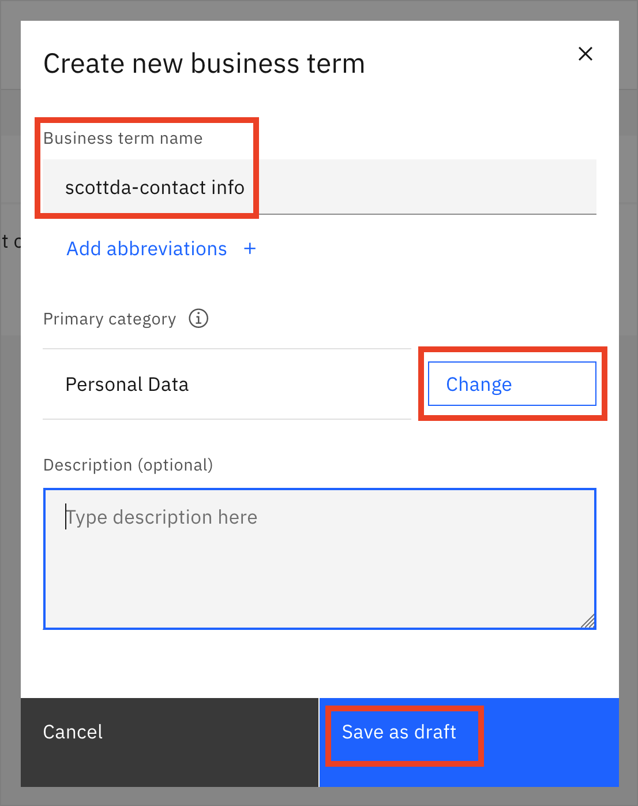
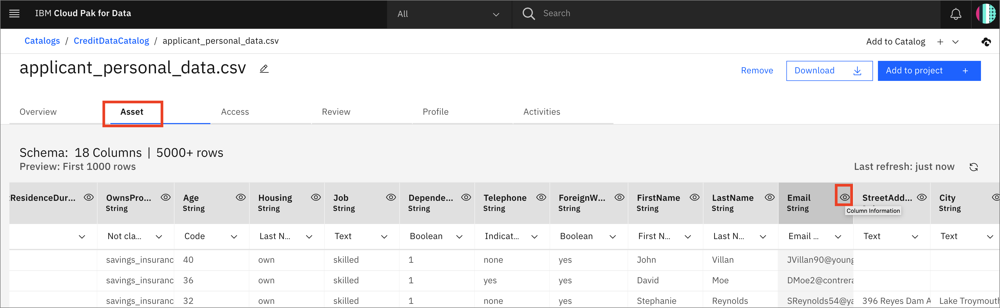
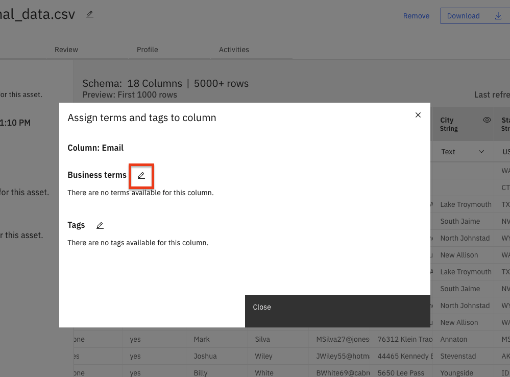
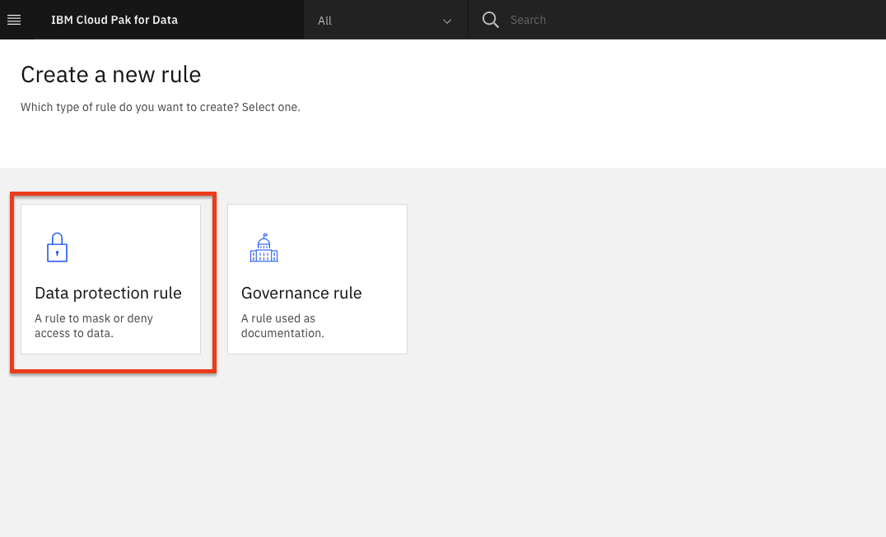

Find, prepare, and understand data with Watson Knowledge Catalog
This tutorial demonstrates how to solve the problems of enterprise data governance using the IBM Watson Knowledge Catalog on the IBM Cloud Pak for Data platform. We'll explain how to use governance, data quality, and active policy management to help you protect and govern sensitive data, trace data lineage, and manage data lakes. This knowledge can help you quickly discover, curate, categorize, and share data assets, data sets, analytical models, and their relationships with others in your organization.
Learning objectives¶
In this tutorial, you will learn how to:
- Set up Catalog
- Add Data Assets
- Add collaborators and control access
- Add categories
- Add data classes
- Add Business terms
- Add rules for policies
Prerequisites¶
- IBM Cloud Pak for Data
- Watson Knowledge Catalog
- Admin access to create and administer the catalog
Estimated time¶
Completing this tutorial should take about 30-45 minutes.
Steps¶
1. Set up Catalog¶
NOTE: The default catalog is your enterprise catalog. It is created automatically after you install the Watson Knowledge Catalog service and is the only catalog to which advanced data curation tools apply. The default catalog is governed so that data protection rules are enforced. The information assets view shows additional properties of the assets in the default catalog to aid curation. Any subsequent catalogs that you create can be governed or ungoverned, do not have an information assets view, and supply basic data curation tools.
First we'll create a catalog and load some data
Create the catalog¶
- Go to the upper-left (☰) hamburger menu and choose
Catalogs->All catalogs.

- From the Your catalogs page, click the
Create catalogbutton.

- Give your catalog a name, check the
Enforce data protection rulescheckbox and provide an optional description. Then click theCreatebutton.
Note: Click
Okin the pop up window when selecting the data protection checkbox.
2. Add Data Assets¶
There are several ways to add assets to the catalog. We are going to add a local data asset. There are also optional sections to add connection assets below.
Local Data Asset¶
-
Download the applicant_personal_data.csv file. Under the Browse Assets tab, below Now you can add assets, click here to add your data.
-
Click
Add to Catalog +in the top right and chooseLocal files.

- Click the
browselink in the 'Select file(s) panel. Browse to the/data/split/applicant_personal_data.csvfile to select it. Add an optional description and click theAddbutton.

NOTE: Stay in the catalog until loading is complete! If you leave the catalog, the incomplete asset will be deleted.
- The newly added file will show up under the Browse Assets tab of your catalog:

(Optional) Add Connection¶
- You can add a connection to various data sources, for example DB2 Warehouse in IBM Cloud, by choosing
Add to Catalog +->Connection:

- Click on the data source type you want to add (for example,
Db2 Warehouse).

- Enter the connection details and click
Create:

- The connection now shows up in the catalog.
Note: Virtualized data can be added to the Default catalog by someone with Administrator or Editor access to that catalog. There is an option to add Data Virtualization as a connection.
(Optional) Add Data from Connection¶
Once you have a connection to a data source, you will be able to add assets from that connection.
- Click
+Add to Catalog->Connected asset:

- Click Source ->
Select source. Browse underDVto your Schema (i.e. UserXYZW) and choose the joined table. ClickSelect.
A user can now add this to a project like any other asset from a catalog.
3. Add Collaborators and Control access¶
- Under the Access Control tab you can click
Add Collaboratorto give other users access to your catalog.

-
You can search for a user by entering their name in the
Collaboratorsfield. Click on the name to select the user., and clickAdd. -
You can choose a role for the user -
Admin,Editor, orViewer. Then click theAddbutton.

- To access data in the catalog, click on the name of the data.

- An overview of the data will open with metadata and Governance artifacts.

- Click on the
Assettab to see a preview of the first 1000 rows.

- You can click the
Reviewtab and rate the data, as well as comment on it, to provide feedback to consumers of the data.

4. Add categories¶
The fundamental abstraction in Watson Knowledge Catalog is the Category. A category is analogous to a folder. You can add categories as needed, or you can import them in CSV format.
Import categories (optional)¶
To import categories with unique names, you will need to be comfortable with running a command in a terminal window. Please skip this if you are not familiar with that process.
- All category names are global in scope, so you'll need to import a file with unique names. Go to where you cloned or downloaded this repository, and navigate to the file
data/wkc/glossary-organize-categories.csv. Run the scriptdata/wkc/prepend-user-tag.pyusing your intials or some other tag in order to create a unique file. For example, I might run./prepend-user-tag -T scottda. If you do not add a tag with the-Tparameter, a unique file with unique Category names will be generated with a python time.time() string.

- Import a category for your assets by going to the upper-left (☰) hamburger menu, choose
Governance->Categories, then the click theAdd categorybutton and chooseImport from file.

- Click the
Add fileand navigate to where you cloned/downloaded the workshop repository, choosing the file that you have created using theprepend-user-tag.pyscript, i.edata/wkc/scottda-glossary-organize-categories.csvwould be the file I created by running./prepend-user-tag.py -T scottda. Click theNextbutton.

- Under
Select merge optionchooseReplace all valuesand clickImport.

-
You will see "The import completed succesfully" when it is completed.
-
In this way, you can import Categories, Business Terms, Classifications, Policies, etc. to populate your governance catalogs.
Add category manually¶
NOTE: Categories, Business Terms, Data Classes, and othe Governance artifacts are global in scope. When you are asked to create one, pre-pend your initials or some unique tag, or it will fail. For example, below I would use
scottda-Personal Datain place ofXXX-Personal Data.
In addition to importing, you can manually create categories. Add a category for your assets by going to the upper-left (☰) hamburger menu, choose Governance -> Categories, then click the Add category button and then New category.

- Give your category a name pre-pended with initials or a unique tag, such as XXX-Personal Data, and an optional description, and then click the
Savebutton.

- Now, if you hit the
Create categorylink on the Personal Data category screen under Subcategories, you can create a subcategory, such as Residence Information.

- For the Personal Data category you can select a Type, such as
Business term.

- We can also create classifications for assets, similar to Confidential, Personally Identifiable Information, or Sensitive Personal Information in a similar way, by going to the upper-left (☰) hamburger menu, choose
Governance->Classifications.

- Click on the
Add classificationbutton on the top right and thenNew classificationfrom the drop down menu. These classifications can then be added to your category as a Type:

5. Add data classes¶
NOTE: Categories, Business Terms, Data Classes, and othe Governance artifacts are global in scope. When you are asked to create one, pre-pend your initials or some unique tag, or it will fail. For example, below I would use
scottda-alphanumericin place ofXXX-alphanumeric.
When you profile your assets, a data class will be inferred from the contents where possible. We'll see more on this later. You can also add your own data classes.
- Add a data class for your assets by going to the upper-left (☰) hamburger menu, choose
Governance->Data classes, then click theAdd data classbutton and then theNew data classoption from the drop down menu.

- Give your new data class a name pre-pended with initials or a tag, i.e. XXX-alphanumeric, and then click
Changefor Primary category.

- Choose the Personal Data primary category and click
Add.

-
Now you can click
Save as draft. -
Once the data class is created, we can optionally: add Stewards for this class, and associate classifications and business terms. When you are ready, click the
Publishbutton and againPublishin the pop up window.

-
Now let's add that data class to a column in our applicant_personal_data.csv asset.
-
Go back to the catalog you created earlier (i.e CreditDataCatalog) and open it ((☰) hamburger menu
Catalogs->All catalogsand chooseCreditDataCatalog). Under the Browse assets tab, click on the data set applicant_personal_data.csv, and then theAssettab, to get the column/row preview. Find the CustomerID column and click the down arrow next to "Customer Number" and then View all:

- In the window that opens, search for your newly created data class, alphanumeric and click it when it returns in the search. Then click the
Selectbutton.

6. Add Business terms¶
NOTE: Categories, Business Terms, Data Classes, and othe Governance artifacts are global in scope. When you are asked to create one, pre-pend your initials or some unique tag, or it will fail. For example, below I would use
scottda-Contact Informationin place ofXXX-Contact Information.
You can use Business terms to standardize definitions of business concepts so that your data is described in a uniform and easily understood way across your enterprise.
You already saw how to create a category and make it a business term. You can also create the business term as its own entity.
- From the upper-left (☰) hamburger menu, choose
Governance->Business terms:

- Click on the upper-right
Add business termbutton and then theNew business termoption in the drop down menu.

- Give the new Business term a name pre-pended with initials or a tag, such as XXX-Contact Information and optional description. Click
Changeunder Primary category and choose Personal data, then Click theSave as draftbutton.

- A window will come up once the term is created. You can see a rich set of options for creating related terms and adding other metadata. For now, click
Publishto make this term available to users of the platform. Go ahead and clickPublishon the pop up confirmation window.

- Go back to the catalog you created earlier (i.e CreditDataCatalog) and open it ((☰) hamburger menu
Catalog->All catalogsand chooseCreditDataCatalog). Under the Browse assets tab, click on the data set applicant_personal_data.csv, and then theAssettab, to get the column/row preview. Find the Email column and click the Column information icon (looks like an "eye").

- In the window that opens, click the edit icon (looks like a "pencil") next to Business terms :

- Enter XXX-Contact Information (your uniquely named term such as scottda-ContactInfo) term you created earlier under Business terms and the term will be searched for. Click on the
Contact Informationterm that is found, and clickApply:

-
Click
Closein that window once the term has been applied. Now, do the same thing to add the Contact Information Business term to the Telephone column. -
You will now be able to search for these terms from within the platform. For example, going back to your top level CreditDataCatalog, in the search bar with the comment "What assets are you searching for?" enter your unique
Contact Information term:

- The applicant_personal_data.csv data set will show up, since it contains columns tagged with the Contact Infomation business term.
7. Add rules for policies¶
We can now create rules to control how a user can access data.
NOTE: Workshop teammates can simply reuse 1 term to associate with a rule, i.e. CustomerID, or you can proceed below to create a uniquely named one.
- Create a business term called XXX-CustomerID, or re-use one of your workshop teammates buisness terms for this expercise. Assign it to your CustomerID column in the data set using the instructions above. See below if you need details, but try it yourself first, and skip to Adding a rule below if you do not need a reminder.
How to create a Business term review¶
-
From the upper-left (☰) hamburger menu, choose
Governance->Business terms. -
Click on the upper-right
Add business termbutton and then theNew business termoption in the drop down menu. -
Give the new Business term the name XXX-CustomerID and optional description. Click
Changeunder Primary category and choose Personal data, then Click theSave as draftbutton. In the next window, clickPublish. -
Go back to the catalog you created earlier (i.e CreditDataCatalog) and open it ((☰) hamburger menu
Catalog->All catalogsand chooseCreditDataCatalog). Under the Browse assets tab, click on the data set applicant_personal_data.csv, and then theAssettab, to get the column/row preview. Find the CustomerID column and click the Column information icon (looks like an "eye"). -
In the window that opens, click the edit icon (looks like a "pencil") next to Business terms .
-
Enter CustomerID under Business terms and the term will be searched for. Click on the
CustumerIDterm that is found, and clickApply. Then close the pop up window.
Adding a rule¶
-
From the upper-left (☰) hamburger menu, choose
Governance->Rules. -
Click the
Add rulebutton on the top right and then select theNew ruleoption from the drop down menu. -
In the 'Create a new rule' page, select the
Data protection ruleoption.

-
Give your rule a unique XXX-Name, leave the Type set to
Access, and add a Business definition. -
Under Rule builder > Condition1: For the
Ifcondition, select Business term Contains any CustomerID. Under Action, for thethenpanel, select mask data in columns containing alphanumeric. Choose the tile forSubstitute, which will make a non-identifiable hash. This obscures the actual CustomerID, but allows actions like database joins to still work. Click theCreate rulebutton.

-
Now if we go back to our applicant_personal_data.csv asset in the catalog at the CustomerID column, it will look the same as before. But a non-admin user will see the "lock" icon and see that the customerID has now been substituted with a hash value.
-
To add a rule to Obfuscate data, create a new data class called Age. See the instructions above if needed, don't forget to publish the class.
-
Back in the CreditDataCatalog, under the applicant_personal_data.csv asset, go to the
Overviewtab and scroll to the Age column. Click the "down arrow" and you can see that the data has been inferred to be classified as a Code. Change the classifier by clickingView all.

- Now change the classifier by starting to type Age. When this comes up in the search, select it and then click the
Selectbutton.

- Following the prior instructions, you can build a new data protection rule to Obfuscate this Age column.

- And now when that column is viewed by a non-admin user, it will have data that is replaced with similarly formatted data.
Summary¶
In this lab, we learned how to:
- Set up Catalog and Data
- Add collaborators and control access
- Add categories
- Add data classes
- Add Business terms
- Add rules for policies
This tutorial is part of the Getting started with IBM Cloud Pak for Data learning path. To continue the series and learn more about IBM Cloud Pak for Data, you can either take a look at the next pattern, Data analysis, model building, and deploying with Watson Machine Learning with notebook, look at the next tutorial titled Automate model building with AutoAI or Build a predictive machine learning model quickly and easily with IBM SPSS Modeler.
In this tutorial, you have learned a few of the powerful tools available for working with data on the IBM Cloud Pak for Data platform. With IBM Watson Knowledge Catalog, team members can work together in their individual roles to bring data and AI to the enterprise.